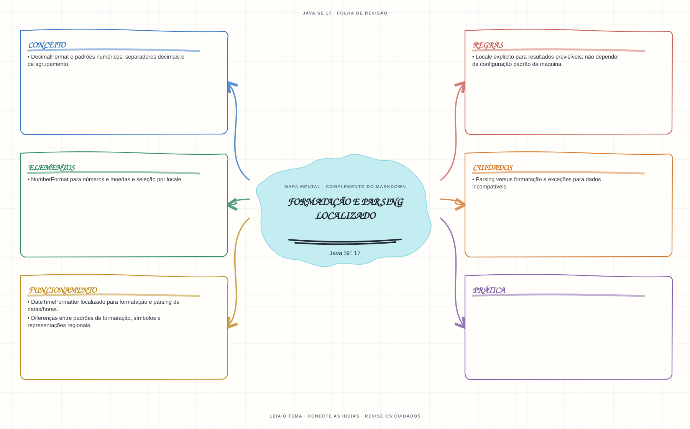

Ver mapa mental deste assuntoFormatar e interpretar números e datas com locale explícito e tratar entradas incompatíveis.
Aprofundamento e revisão 1Z0-829: use esta página depois dos fundamentos. Os tópicos de prova complementam a trilha inicial e não são pré-requisitos para começar a programar.
- Leia o objetivo e localize a ideia principal no conteúdo abaixo.
- Preveja o resultado, compile e execute o exemplo.
- Faça a atividade sem copiar a solução e confira a checagem comentada.
EXEMPLO DE CONSOLE
Veja a regra em execução
Antes de executar, anote sua previsão. Compile o exemplo com o JDK e compare a saída observada com as regras deste assunto.
Comandos para compilar e executar
javac -d target/bin src/11-localizacao/formatacao-e-parsing/FormatacaoEParsingExample.java
java -cp target/bin FormatacaoEParsingExampleA execução imprime o resultado no console para você comparar com sua previsão.
Consultar código-fonte: FormatacaoEParsingExample.java
import java.text.NumberFormat;
import java.text.ParseException;
import java.text.ParsePosition;
import java.util.Locale;
public class FormatacaoEParsingExample {
public static void main(String[] args) throws ParseException {
System.out.println("=== Formatacao e parsing localizado ===");
double valor = 12345.67;
NumberFormat formatoBrasil = NumberFormat.getCurrencyInstance(Locale.forLanguageTag("pt-BR"));
NumberFormat formatoEua = NumberFormat.getCurrencyInstance(Locale.US);
NumberFormat parserNumericoBrasil = NumberFormat.getNumberInstance(Locale.forLanguageTag("pt-BR"));
String valorBrasileiro = "1.234,50";
ParsePosition posicao = new ParsePosition(0);
Number valorInterpretado = parserNumericoBrasil.parse(valorBrasileiro, posicao);
System.out.println("Mesmo valor em moeda brasileira: " + formatoBrasil.format(valor));
System.out.println("Mesmo valor em moeda dos EUA: " + formatoEua.format(valor));
if (valorInterpretado == null || posicao.getIndex() != valorBrasileiro.length()) {
throw new ParseException("Valor invalido para o locale pt-BR.", posicao.getErrorIndex());
}
System.out.println("\"" + valorBrasileiro + "\" interpretado no locale pt-BR: "
+ valorInterpretado);
}
}
PRATIQUE AGORA
Faça uma pequena alteração por conta própria
Formate o mesmo valor monetário para dois Locale explícitos e compare separadores e símbolos.
Concluído quando: o programa compilar, produzir o resultado esperado e você conseguir explicar a regra aplicada.
CHECAGEM RÁPIDA · Formatação e parsing localizado
Por que o mesmo padrão de formatação pode produzir texto diferente em dois locales?
Conferir resposta comentada
Símbolos e convenções regionais (como separadores decimais e de agrupamento) variam; informe explicitamente o Locale para resultados previsíveis.
Estude
NumberFormatpara números e moedas e seleção por locale.DateTimeFormatterlocalizado para formatação e parsing de datas/horas.DecimalFormate padrões numéricos; separadores decimais e de agrupamento.- Parsing versus formatação e exceções para dados incompatíveis.
Localeexplícito para resultados previsíveis; não depender da configuração padrão da máquina.- Diferenças entre padrões de formatação, símbolos e representações regionais.
Prática
Formate o mesmo valor numérico, moeda e data para dois locales distintos e explique as diferenças de saída.
Como este capítulo se relaciona com cada exame
Conceitos de locale são reaproveitáveis; valide objetivos específicos de Java 8.
Base de estudo deste portal; confirme o mapeamento com o blueprint vigente.
Conceitos úteis; confira APIs e objetivos vigentes de Java 21.
Orientação editorial sobre reaproveitamento do material; não representa objetivos oficiais nem garante cobertura do exame. Consulte o comparativo e as fontes da Oracle.